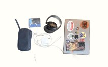

The bag as modular identities
“I carry an ugly big backpack every day for school. But if I’m going out or having fun, I’ll put on a cute little handbag with all my makeup and stuff.”
Age 22
Undergraduate junior
Bag habit
One bag for class and commute. Another for going out, parties, or social moments.

Carrying behavior
- Carries essentials for school, study, and transit
- Chooses items that signal taste or personality
- Switches bags entirely from “day mode” to “fun mode”
Relationship to objects
Both practical and expressive. The bag isn’t fixed—it’s a curated surface that changes with context.